Maxon Cinema 4D 文件 导入-导出 (.c4d 文件)
$12.00相册
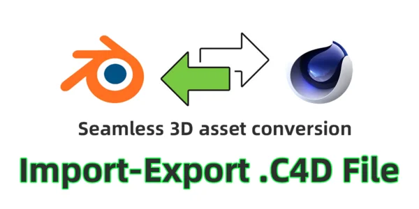
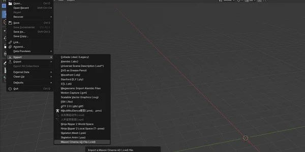
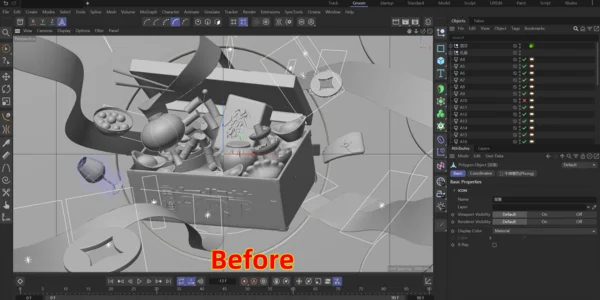
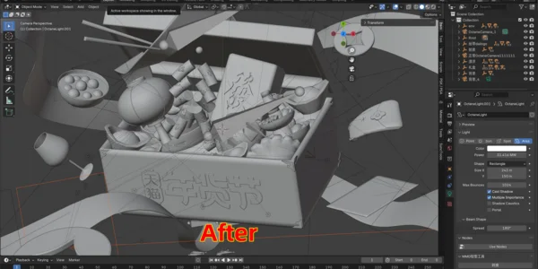
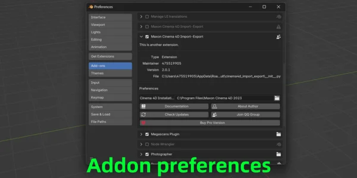
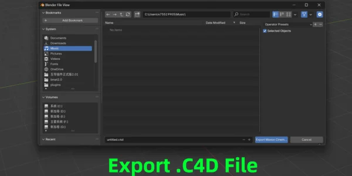
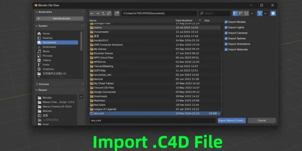
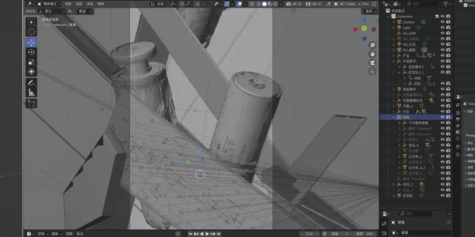
产品信息
分类插件, 导入 & 导出
Blender 版本4.2 ~ 5.0
许可证GPL
价格$12.00
3d-blenderc4d-animation-importc4d-asset-supportc4d-exportc4d-file-supportc4d-importc4d-to-blender-conversioncinema-4d-to-blenderexport-formatsfile-compatibilityprofessional-3d-workflowseamless-integration
描述
Maxon Cinema 4D 文件 导入-导出 (.C4D 文件) 将 Cinema 4D 项目导入 Blender 的最快方式！ 一个精心打磨的、可用于生产的插件，可直接从 Blender 导入选定的 .c4d 项目文件——无需保持 Cinema 4D 打开。 它以最小的摩擦保留核心资产：
此插件旨在提高同时使用 Cinema 4D 和 Blender 的艺术家和工作室的生产力，减少中间步骤并保持创意作品的完整性。 | |
革命性突破！现在无需安装 Cinema 4D 即可直接使用！ 现已支持 macOS！ 该插件可以直接从 Blender 运行——不再需要安装 Cinema 4D。 | |

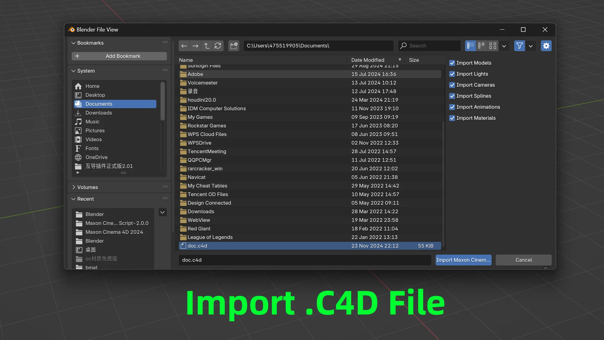 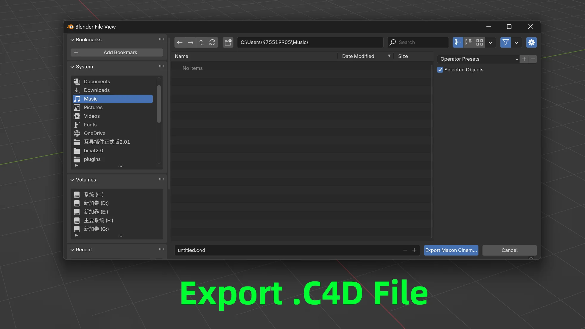 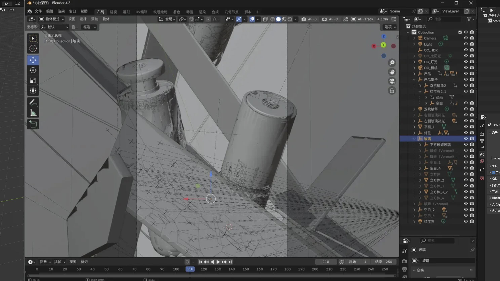 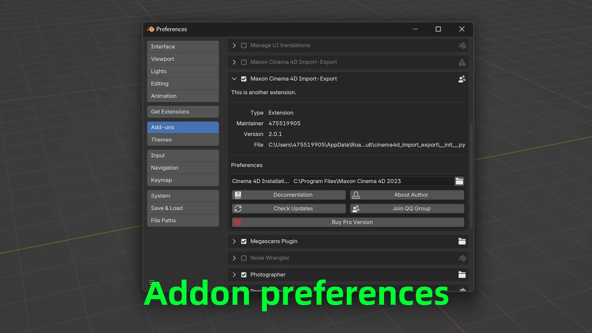 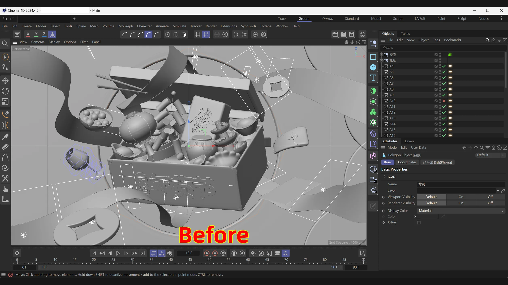 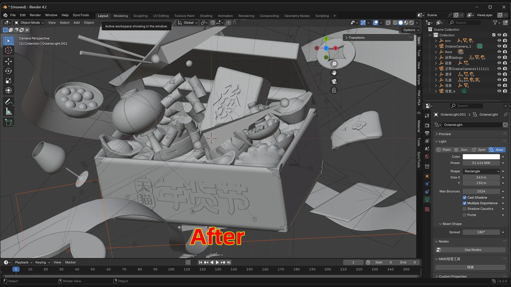 | |||
核心功能 此插件功能 专为在 Cinema 4D 和 Blender 之间切换的艺术家和工作室打造——更少的中间步骤，更高的资产完整性。
| |||
用户评价 用户怎么说 来自在生产中使用此插件的艺术家和工作室的真实反馈。
| |||
常见问题 常见问题解答 使用此插件需要安装 Cinema 4D 吗？ 不需要。此插件在 Blender 内运行，不需要 Cinema 4D 运行或安装。 On macOS, a valid Maxon license is still required due to Apple’s policy. 是否支持 Windows 和 macOS？ 是的，支持 Windows 和 macOS。 macOS 需要 Maxon 许可证；Windows 不需要。 支持哪些 Blender 版本？ 已在 Blender 上测试并正式支持 4.2 – 5.0。未来更新可能会扩展兼容性。 可以从 C4D 导入哪些资产？ 动画 (keyframed & procedural), 3D models, standard & Redshift materials, rigged characters with associated assets, plus splines and curves. | |||
定价 简洁的、对艺术家友好的定价 一次购买，终身使用。 如需高级导入/导出功能可随时升级。 $12 标准版 Direct Blender import of .c4d projects with support for animations, models, materials, characters and splines. • 200+ sales on Superhive / Blendermarket • Trusted by artists working across Blender and Cinema 4D
| |||
注意： 由于 Apple 的政策，在 macOS 上仍需要 Maxon 许可证。 在 Windows 上不需要许可证。 | |||
支持 Blender 基金会 我们相信回馈让我们的工作成为可能的社区。 每个月，我们都会将插件收入的一部分用于支持 Blender 基金会。 感谢您帮助我们为开源创意的未来做出贡献。 | |||
© 2024 Maxon Cinema 4D 导入/导出插件 · blenderVfx掌握 |
文档
📦 插件 文档 The Maxon Cinema 4D 文件 导入-导出 (.C4D 文件) plugin, developed by blenderVfx掌握, enables seamless integration between Blender and Cinema 4D by allowing users to import and export .c4d project files directly within Blender. This plugin eliminates the need for Cinema 4D to be installed, streamlining workflows for artists and studios working across both platforms. | |
安装 🔧 安装 Guide 下载 the 插件: Obtain the .zip file from the Superhive product page. 安装 in Blender: 1. Open Blender. 2. Navigate to 编辑 > 偏好设置 > 插件. 3. Click 安装, select the downloaded .zip file, and confirm. 启用 the 插件: 1. In the 插件 list, search for Maxon Cinema 4D 文件 导入-导出. 2. Check the box next to the plugin to activate it. | |
导入 📥 导入ing .c4d 文件 1. In Blender, go to 文件 > 导入 > Maxon Cinema 4D 文件 (.c4d). 2. Browse and select the .c4d file you wish to import. 3. In the import options, choose the asset types you want to include (e.g., models, animations, materials). 4. Click 导入 Maxon Cinema 4D 文件 to begin the import process. 注意： 导入ing large .c4d files may take some time. Please be patient during the process. | |
导出 📤 导出ing .c4d 文件 1. In Blender, navigate to 文件 > 导出 > Maxon Cinema 4D 文件 (.c4d). 2. Choose the destination path and filename for the exported .c4d file. 3. In the export options, select the asset types you wish to include in the export. 4. Click 导出 Maxon Cinema 4D 文件 to initiate the export process. 注意： The plugin will convert Blender assets into the .c4d format, making them compatible with Cinema 4D. | |
导入ant ⚠️ 导入ant Considerations
| |
Resources 📚 添加itional Resources Purchase and 下载:Superhive Product 页 Official 文档: 插件 文档 | |
Community 💬 连接 Discord Community 连接 with other users, get support, share your work, and stay updated with the latest news and updates. | |
© 2024 Maxon Cinema 4D 导入/导出插件 · blenderVfx掌握 |
产品文件
- Maxon_Cinema_4D_导入-导出-2.1.6.zip(272.5 MB)
- Maxon_Cinema_4D_导入-导出-2.2.0.zip(397.7 MB)
- Maxon_Cinema_4D_导入-导出-mac.zip(105.5 MB)
- Maxon_Cinema_4D_导入-导出_Blender5.0__.zip(109.0 MB)
- Maxon_Cinema_4D_导入-导出_MacOs_Blender5.0__.zip(272.1 MB)
- Maxon_Cinema_4D_导入-导出_Pro_MacOs.zip(1.0 KB)
- Maxon_Cinema_4D_导入-导出_Pro_MacOs_v2.31.zip(272.0 MB)
- file_7.zip(4.8 KB)